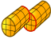
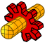
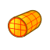
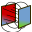

El banco de trabajo MEF provee un moderno flujo de Análisis de Elementos Finitos (AEF) para FreeCAD. Principalmente estoy significa que todas las herramientas para hacer un Analisis de Elementos Finitos estan combinadas en una (GUI) Interface Grafica de Usuario.
{kind=link}
Los pasos para hacer un AEF en el banco de trabajo MEF son:
- Pre-procesar
- Modelando la geometria, en ya esta cerca de ser un programa de completo crecimiento
- Crear un analisis:
- Crear una malla MEF fuera del modelo geometrico.
- Agrega un material para el modelo de analisis
- Resolver
- Resolver el sistema de ecuaciones dentro de la GUI de FreeCAD.
- Pos-procesar
- Ver los resultados dentro de la GUI de FreeCAD.
Lo superior, principalmente describe como un AEF es hecho dentro del banco de trabajo MEF. Para mas documentación dirigirse a las herramientas GUI descritas mas adelante.
Como la versión 0.15 de FreeCAD, el modulo MEF puede ser utilizado en Windows, Mac OSX y plataformas linux. Desde que el banco de trabajo hace uso de programas externos, la cantidad de intervención manual dependerá del sistema operativo que estés utilizando.Revisa Instalar MEF
Herramientas
- Menú de Modelo:
-
 Contenedor de análisis: Crea un contenedor para análisis mecánico. Si un solido es seleccionado en la vista de arbol antes de dar clic sobre el, La ventana de mallado va ser abierta después.
Contenedor de análisis: Crea un contenedor para análisis mecánico. Si un solido es seleccionado en la vista de arbol antes de dar clic sobre el, La ventana de mallado va ser abierta después. - Material MEF para solidos: Permite seleccionar un material de la base de datos.
-
 Material MEF para liquidos: Permite seleccionar un material de la base de datos.
Material MEF para liquidos: Permite seleccionar un material de la base de datos. - Material mecánico no lineal: Permite seleccionar un material de la base de datos.
-
 Corte transversal de viga:
Corte transversal de viga: -
 Rotación de viga:
Rotación de viga: - Espesor de caja de placa:
-
 Sección de fluido para flujo 1D:
Sección de fluido para flujo 1D: - Restricciones Mecánicas:
-
 Restricción fija: Utilizada para definir una restricción fija de un punto/arista/cara.
Restricción fija: Utilizada para definir una restricción fija de un punto/arista/cara. -
 Restricción de desplazamiento: Utilizada para definir una restricción desplazamiento de un punto/arista/cara(s).
Restricción de desplazamiento: Utilizada para definir una restricción desplazamiento de un punto/arista/cara(s). - Restricción de rotación de plano: Utilizada para definir una restricción de rotación de plano sobre una cara plana.
-  Restricción de contacto: Utilizada para definir una restricción de contacto entre dos caras.
-
 Restricción de transformación:
Restricción de transformación: -
 Restricción de fuerza: Utilizada para definir una fuerza en Newtons aplicada uniformemente a una cara seleccionada en una dirección definida.
Restricción de fuerza: Utilizada para definir una fuerza en Newtons aplicada uniformemente a una cara seleccionada en una dirección definida. - Restricción de presión: Utilizada para definir una restricción de presión
-
 Restricción de peso propio: Utilizado para definir una aceleración de gravedad actuando sobre un modelo.
Restricción de peso propio: Utilizado para definir una aceleración de gravedad actuando sobre un modelo. -
 Restricción de rodamiento: Utilizado para definir una restricción de rodamiento.
Restricción de rodamiento: Utilizado para definir una restricción de rodamiento. -  Restricción de engrane: Utilizado para definir una restricción de engrane.
-
 Restricción de polea: Utilizado para definir una restricción de polea.
Restricción de polea: Utilizado para definir una restricción de polea.
-
- Restricciones térmicas:
-  Restricción inicial de temperatura: Utilizado para definir una restricción inicial de temperatura de un cuerpo.
-
 Restricción de flujo de calor: Utilizado para definir una restricción de flujo de calor sobre una(s) cara(s).
Restricción de flujo de calor: Utilizado para definir una restricción de flujo de calor sobre una(s) cara(s). -
 Restricción de temperatura: Utilizado para definir una restricción de temperatura sobre un punto/arista/cara(s).
Restricción de temperatura: Utilizado para definir una restricción de temperatura sobre un punto/arista/cara(s). - Restricción de cuerpo de fuente de calor:
- Restricciones de fluido:
-
{kind=link}
{kind=link}
{kind=link}
{kind=link}
{kind=link}
{kind=link}
{kind=link}
{kind=link}
{kind=link}
- Menú de Malla:
-
 Malla MEF a partir de forma por Netgen:
Malla MEF a partir de forma por Netgen: -
 Malla MEF a partir de forma por GMSH:
Malla MEF a partir de forma por GMSH: -
 Malla MEF a partir de capa limite:
Malla MEF a partir de capa limite: -
 Region de malla MEF:
Region de malla MEF: -
 Grupo de malla MEF:
Grupo de malla MEF: - Colocar nodos: Crea/define una colocacion de nodo en una malla MEF.
-
 Malla MEF a malla: Convierte la superficie de una malla MEF a una malla.
Malla MEF a malla: Convierte la superficie de una malla MEF a una malla.
-
{kind=link}
- Menú de Solucionador:
-
 Herramientas del solucionador Calculix CCX: Crea un nuevo solucionador para este analisis. En la mayoria de los casos el solucionador es creado junto con el analisis.
Herramientas del solucionador Calculix CCX: Crea un nuevo solucionador para este analisis. En la mayoria de los casos el solucionador es creado junto con el analisis. - Solucionador Calculix:
-
 Solucionador Elmer:
Solucionador Elmer: - Solucionador Z88:
-
 Ecuación de calor:
Ecuación de calor: -
 Ecuación de elasticidad:
Ecuación de elasticidad: -  Ecuación electrostatica:
-
 Ecuación de solucionador de flujo:
Ecuación de solucionador de flujo: -
 Ecuación de flujo:
Ecuación de flujo: -
 Control del trabajo del solucionador: Abre un nuevo menu para ajustar y iniciar el solucionador seleccionado.
Control del trabajo del solucionador: Abre un nuevo menu para ajustar y iniciar el solucionador seleccionado. - Ejecutar calculo de solucionador : Ejecuta el solucionador seleccionado del análisis activo.
-
{kind=link}
{kind=link}
- Menú de Resultados:
-
 Purga de resultados: Elimina los resultados del análisis activos.
Purga de resultados: Elimina los resultados del análisis activos. -
 Mostrar resultados: Used to display the result of an analysis.
Mostrar resultados: Used to display the result of an analysis. - icon
 Pos aplicar cambios:
Pos aplicar cambios: -
 Pos canaliza a resultado:
Pos canaliza a resultado: - Pos crea filtro corto:
-
 Pos crea filtro escalar:
Pos crea filtro escalar: - Pos crea filtro de corte:
- Pos crea filtro de vector deformado:
-
 Pos crea filtro a lo largo de linea:
Pos crea filtro a lo largo de linea: -
 Pos crea filtro de estrés linealizado:
Pos crea filtro de estrés linealizado: - icon [[Image:|32px]] Pos crea dato a punto filtro:
-
 Pos crea funciones:
Pos crea funciones:
-
{kind=link}
{kind=link}
{kind=link}
- Menú de contexto:
Tutoriales
Tutorial 1 FEM CalculiX Cantilever 3D
Tutorial 2 Tutorial MEF
Tutorial 3 Tutorial MEF en Python
Tutorial 4 MEF cizalla de un bloque compuesto
Tutoriales de análisis térmico mecánico acoplado PDF's
Video Tutorial 1 publicación en foro con enlace a youtube
Video Tutorial 2 publicación en foro con enlace a youtube
Más video Tutoriales publicación en foro con enlace a youtube
Enlaces
Instalar MEF para una descripción detallada de como instalar un modulo MEF.
Malla en MEF para mas información acerca de las mallas en FreeCAD
FEM CalculiX para mas información acerca de la interface entre el modulo MEF y el actual solucionador CalculiX
Proyecto MEF para mas información acerca de las unidades, limitaciones y el modulo de desarrollo MEF.